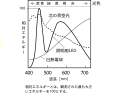

2023年
問題87 光と照明に関する次の記述のうち，最も不適当なものはどれか．
（1）照明器具の不快グレアの程度を表すUGRは，値が大きいほどまぶしさの程度が大きいことを意味する．
（2）設計用全天空照度は，快晴よりも薄曇りの方が高い．
（3）色温度が高くなると，光色は青→白→黄→赤と変わる．
（4）演色評価数が100に近い光源ほど，基準光で照らした場合の色に近い色を再現できる．
（5）事務所における製図作業においては，文書作成作業よりも高い維持照度が求められる．
2023年
問題87 正解（3） 頻出度AAA
色温度が高くなると，光色は赤→黄→白→青と変わる．
光にも色があり，光の色は，380～780nmの可視域のうちどの波長域に分布しているか（分光分布）によって決まる．
白熱電球，照明用LED，北の青空光の分光分布を2023-87-1図に示す．

ランプなどの光源の光色は「相関色温度」によって数値的に示される．相関色温度は仮想的な黒体(完全放射体)を熱したときの温度と放射する比色の関係を基準とし，単位は絶対温度K（ケルビン）である．
黒体の分光分布は温度により変化し2,000K程度では波長の長い域（赤い光）が多く，色温度が高くなるに連れて波長の短い域（青い光）が増加し10,000Kでは青っぽい白色の光となる（2023-87-1表参照）．
2023-87-1表 身近な光の相関色温度［K］
| ろうそく（パラフィン）の炎 | 1,900 |
| 高圧ナトリウムランプ | 2,100 |
| 蛍光ランプ（電球色） | 2,800 |
| 白熱電球（I00W） | 2,850 |
| 地上から見た満月 | 4,125 |
| 蛍光ランプ（白色） | 4,200 |
| メタルハライドランプ高演色型 | 4,300 |
| 蛍光ランプ（昼白色） | 5,000 |
| 地上から見た天頂の太陽 | 5,250 |
| 日中の北窓光 | 6,500 |
| 蛍光ランプ（昼光色） | 6,500 |
| 曇天の空 | 7,000 |
| 青天の青空 | 12,000 |
-(1) グレアとはまぶしさのことである．JIS Z9125屋内照明基準によるとUGR13でまぶしさを感じ始め，19で気になる，25で不快，28だとひどすぎると感じるとしている．事務所の執務室では19，製図室では16を超えないようにする（本年度問題37解説参照）．
-(2) 昼光利用の照明設計用の全天空照度が簡易的に曇天晴と晴天時に分けて示されている．設計用全天空照度は，快晴（10,000Lx）よりも散乱光の多い薄曇りの方が大きい（50,000Lx）．（2021年問題88解説参照）．
-(4) 演色性とは，ランプなどがある物体を照らしたときに，その物体の色の見え方に及ぼす光源の性質のことである．平均演色評価数(Ra)とは，測定対象の光源が演色評価用の色票（R1～R8）を照らしたときの，完全放射体の光などの基準光によるものとの色ずれをR1～R8について平均したもので，0～100の指数として表したものである（100が最良＝色ずれなし）．JIS Z9125 屋内照明基準では，事務所照明のRa推奨最小値を80としている．
-(5) JIS Z9110 照明基準総則，JIS Z9125 屋内照明基準などによれば，文書作成作業時の推奨維持照度は500lx，製図の場合は750lxとしている．（2020年問題86解説参照）．